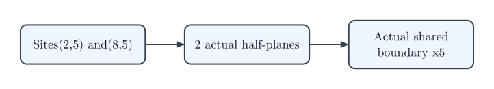
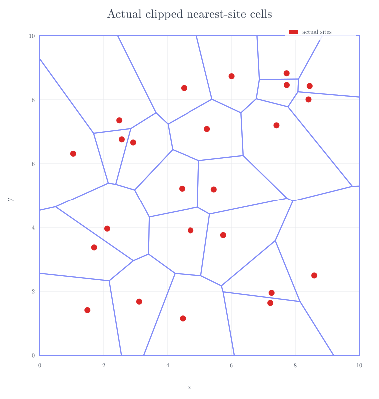
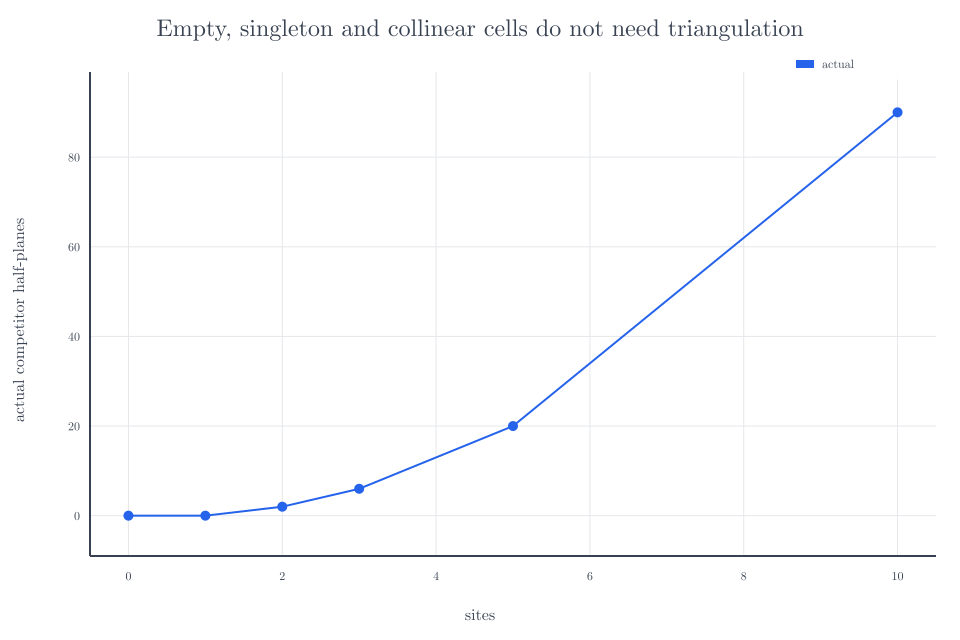
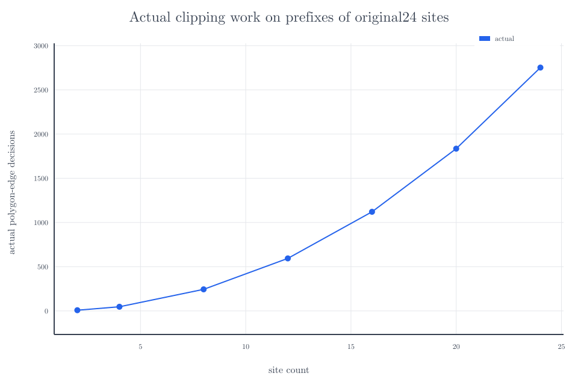

Voronoi cells: actual nearest-site half-plane clipping
Abstract
A finite set of sites partitions a plane by nearest distance, but outer cells extend indefinitely. Clipping the true cells to a declared viewport gives complete polygons that can be plotted and checked.
The method
For site i to be no farther than j, ||x−p_i||²≤||x−p_j||². Cancelling x dot x gives2(p_j−p_i) dot x≤||p_j||²−||p_i||², a closed half-plane. Intersecting all such half-planes with the viewport proves every retained point is nearest to i, with shared boundaries as ties. Each cell is convex because intersections of convex sets are convex. The algorithm retains actual polygons after each competitor clip. The older Delaunay-dual API returns only finite fragments of outer cells; closing those fragments would invent false boundaries.
Simple worked example
#include <dm/dm.hpp>
int main() {
namespace a = dm::algorithms;
namespace g = dm::graphics;
std::filesystem::create_directories("build");
auto r = dm::geometry::clipped_voronoi({{2, 5}, {8, 5}}, {0, 10, 0, 10}, 2);
std::print("| site | competitor | actual polygon after clip |\n|---:|---:|---|\n");
for (auto q : r.steps) {
std::print("|{}|{}|", q.site, q.competitor);
for (auto p : q.polygon)
std::print("({},{}) ", p.x, p.y);
std::print("|\n");
}
g::Diagram concept_diagram(48, 1100);
concept_diagram.node("n0", {0, 0}, "Sites(2,5) and(8,5)");
concept_diagram.node("n1", {5, 0},
std::format("{} actual half-planes", r.halfplanes));
concept_diagram.node("n2", {10, 0}, std::format("Actual shared boundary x{}", std::max_element(r.cells[0].begin(), r.cells[0].end(), [](auto a, auto b) {
return a.x < b.x;
})->x));
concept_diagram.edge("n0", "n1").edge("n1", "n2");
concept_diagram.save_svg("build/voronoi_tiny.svg");
}| site | competitor | actual polygon after clip |
|---|---|---|
| 0 | 1 | (0,0) (5,0) (5,10) (0,10) |
| 1 | 0 | (5,0) (10,0) (10,10) (5,10) |

The retained original experiment
#include <dm/dm.hpp>
int main() {
namespace a = dm::algorithms;
namespace g = dm::graphics;
std::filesystem::create_directories("build");
auto sites = dm::geometry::voronoi_example_sites();
auto clipped = dm::geometry::clipped_voronoi(sites, {0, 10, 0, 10});
auto legacy = dm::geometry::voronoi_diagram(sites);
std::print("| original sites | actual clipped cells | old dual vertices | clipping edge tests " "|\n|---:|---:|---:|---:|\n|{}|{}|{}|{}|\n",
sites.size(), clipped.cells.size(), legacy.vertices.size(),
clipped.edge_tests);
auto p = dm::geometry::clipped_voronoi_plot(clipped);
p.save_svg("build/voronoi_original.svg");
}| original sites | actual clipped cells | old dual vertices | clipping edge tests |
|---|---|---|---|
| 24 | 24 | 36 | 2752 |

Checking the theory and controls
#include <dm/dm.hpp>
int main() {
namespace a = dm::algorithms;
namespace g = dm::graphics;
std::filesystem::create_directories("build");
std::vector<double> x, y;
std::print("| collinear sites | actual cells | actual half-planes |\n|---:|---:|---:|\n");
for (int n : {0, 1, 2, 3, 5, 10}) {
std::vector<dm::geometry::Point2D> sites;
for (int i = 0; i < n; ++i)
sites.push_back({double(i) + .5, .5});
auto r = dm::geometry::clipped_voronoi(sites, {0, 10, 0, 1});
std::print("|{}|{}|{}|\n", n, r.cells.size(), r.halfplanes);
x.push_back(n);
y.push_back(r.halfplanes);
}
auto p = g::RPlot::create();
p.line(x, y, "actual", {37, 99, 235}, 2);
p.points(x, y, "", {37, 99, 235}, 5);
p.title("Empty, singleton and collinear cells do not need triangulation").x_label("sites").y_label("actual competitor half-planes");
p.save_svg("build/voronoi_controls.svg");
}| collinear sites | actual cells | actual half-planes |
|---|---|---|
| 0 | 0 | 0 |
| 1 | 1 | 0 |
| 2 | 2 | 2 |
| 3 | 3 | 6 |
| 5 | 5 | 20 |
| 10 | 10 | 90 |

Sensitivity and selected work
#include <dm/dm.hpp>
int main() {
namespace a = dm::algorithms;
namespace g = dm::graphics;
std::filesystem::create_directories("build");
std::vector<double> x, y;
std::print("| site count | actual half-planes | actual edge tests |\n|---:|---:|---:|\n");
auto original = dm::geometry::voronoi_example_sites();
for (std::size_t n : {2, 4, 8, 12, 16, 20, 24}) {
std::vector<dm::geometry::Point2D> sites(original.begin(),
original.begin() + n);
auto r = dm::geometry::clipped_voronoi(sites, {0, 10, 0, 10});
std::print("|{}|{}|{}|\n", n, r.halfplanes, r.edge_tests);
x.push_back(n);
y.push_back(r.edge_tests);
}
auto p = g::RPlot::create();
p.line(x, y, "actual", {37, 99, 235}, 2);
p.points(x, y, "", {37, 99, 235}, 5);
p.title("Actual clipping work on prefixes of original24 sites").x_label(
"site count").y_label("actual polygon-edge decisions");
p.save_svg("build/voronoi_work.svg");
}| site count | actual half-planes | actual edge tests |
|---|---|---|
| 2 | 2 | 8 |
| 4 | 12 | 47 |
| 8 | 56 | 244 |
| 12 | 132 | 594 |
| 16 | 240 | 1121 |
| 20 | 380 | 1835 |
| 24 | 552 | 2752 |

Interpretation and limits
Distinct finite sites are required; duplicate sites throw instead of double-counting a cell. Sites may lie outside the viewport and have empty cells. Long-double bisector arithmetic improves conditioning but is not an exact-predicate geometry guarantee. The original24 seeded sites are retained, while the figure now uses true cells clipped to[0,10]² at equal Cartesian scales.
All programs are complete editable C++ sources; figures are local files. Actual traces and selected counts come from the producing native kernels, not an independent report reconstruction.
References
Squared-distance cancellation and convex half-plane intersection are derived above; the legacy dual API and new clipped API have distinct stated contracts.
Verified in the shared final four-document batch: 46 scoped native cases;8
directly instrumented ASan/UBSan cases;42 executable public examples;168/168
definitions across10 full scopes;4 hovers;6866 independent records/32327
checks;four frozen surfaces with original seeded fixtures retained;5
checkout/installed standalone headers and linked four-family consumer;16
executed programs and16 inspected figures with both exports. Receipts:
build/mepml-conversion/batch-424-427/.